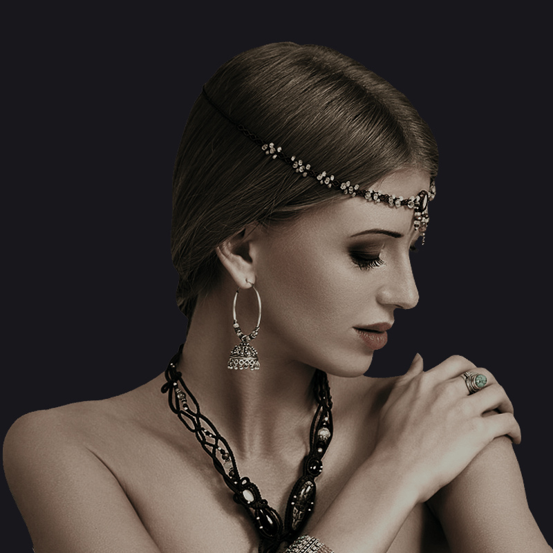

|
400-123-4567 13800000000 |
|
400-123-4567 13800000000 |
高贵典雅
耳环：耳环有两种类型，第一种是插卷型的，适合有耳孔的人使用；另一种则是螺丝型，没有耳孔的人可以使用。耳环要与脸型相配很重要，圆脸型的姑娘就应该佩戴长形项链，垂型耳环，而脸型偏长的女性就应该选戴呈圆形耳环，方脸型的人适合佩戴小巧玲珑的耳钉货耳坠来显示其性格，尖脸的少女可佩戴那类能增加宽感的耳环，如三角形、大钮型、大圈型等夸张的款式。
戒指：要是你的手指比较肥大，那么就选择起角和不对称的款式，如果你有修长纤指，可以戴宽的戒指，若选择粗线条的款式，如方戒、钻戒等，因为那样会使你的手指更具吸引力。如果手形丰富、指甲修长，那么戒指的分量也要相对加重，否则会使手掌显得更大，可考虑选用圆形、梨形或心形的戒指。
项链：如果要凸显出项链上的挂件,那么项链就不要太长太粗，如果只想突出项链的美观，那么就要注意款式，一般选花型项链较好。项链的大小应视人而定的，脖子粗的，尺寸要大，反之要小。项链的选择也应与服装的领式配合，颈脖短的女性，可将衣领开成V形货垂重敞开形，以此来加强颈项长的感觉，然后再配上长而细的项链和一个小小的心形项坠，与V形领相吻合，露在领口正中，这样就会显得颈长而苗条了。